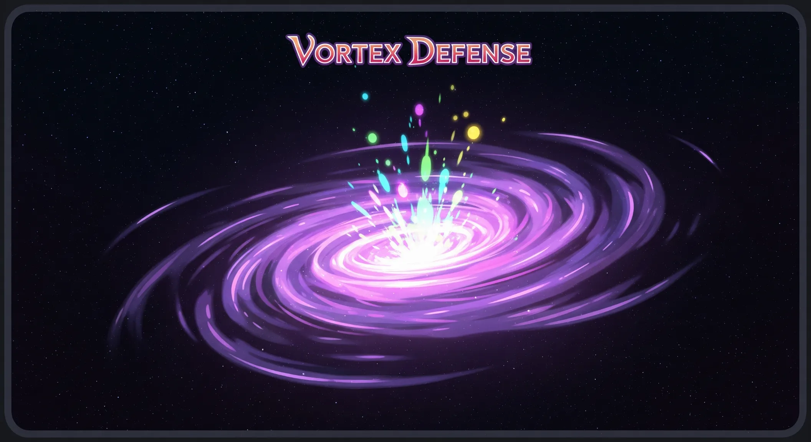
Sharpen your aim and reaction time defending against waves of incoming magical ejecta swirling out from the vortex.
Click on the buttons above to explore the handbook of monsters and items from the world.
This section will guide you through the essentials of getting started, creating your character, understanding game mechanics, and using tools like Avrae. It’s your first step into becoming a legendary Diaper School adventurer!
Before you can battle dragons (or maybe just very grumpy dust bunnies), there are a few things every Diaper School student needs:
Sometimes, the bestest heroes are the ones you dream up all by yourself, with sparkly powers and cool outfits not found in the regular storybooks! This is called "homebrew," and it's like inventing your own super-duper flavor of ice cream!
If you're using homebrew bits like a special race (maybe you're a Fluffy Cloud Kitten!) or a new class (like a Crayon Knight of Justice!), our grown-up helpers (Admins) need to give it a big thumbs up first. But don't fret! Making your character sheet can be as easy as 1-2-3-4 with a friendly robot helper (that's an AI Assistant!).
Create a Level 5 D&D character with the provided materials. The character needs to have both the 2024 background option (which includes a feat and an Ability Score Increase - ASI) AND their normal racial ASI. Use the 27 point-buy method for ability scores, and make sure they have maximized Hit Points (HP) at every level. Please provide the character sheet in a document format if you can!
Imagine telling a super exciting story with your friends, but instead of talking out loud, you write it all down! That's "Play by Post" (or PbP for short). It's like passing secret notes in class, but with more dragons, fewer detentions, and definitely more diapers!
We use our Discord clubhouse for PbP games. Because Discord is super speedy like a race car, our stories can zoom along much faster than old-fashioned forums, which were more like slow, sleepy snails. You can post when you have a moment – maybe during snack time, after school, or before bed – and the adventure keeps unfolding, one exciting message at a time!
Even in a world filled with magic, monsters, and mountains of plushies, we all need to be good friends to each other. That's what roleplay etiquette is all about! It’s like sharing your toys, taking turns on the slide, and not throwing sand (unless it’s magic sand, and everyone agrees it’s okay!).
When you're roleplaying, you'll be doing all sorts of fantastically fun things! Casting super-duper spells, using amazing magical items, and taking brave actions that make everyone say "Wow!"
Meet Avrae! He's a super-smart robot on our Discord who helps us roll dice.
Rolling with a Character Sheet:
!a [weapon name]!c [skill name]!s [ability score]Rolling Without a Character Sheet:
!r 1d20!r 1d20+5!adv 1d20+5!dis 1d20+5!r 1d8+3Manual Rolling: If you roll physical dice, just announce your results clearly in the chat!
Combat is like taking turns in an exciting game!
!init. Manual: !r 1d20 + [Dex mod]. Highest goes first!Example Scenario: The Case of the Cranky Cookie Monster!
Player 1 (Fighter): "I shout, 'Hey! Those are for sharing!' and run towards him! I try to bonk him with my rolling pin!" (Posts !a rolling pin at Cookie Monster)
Player 2 (Wizard): "I'm going to try and make the cookies float away! I cast Mage Hand to gently lift the cookie jar out of his reach!" (Posts !cast mage hand and describes the action)
The DM will then tell you if your actions work and what the (now even crankier) Cookie Monster does next!
Roleplaying is like being the star of your very own adventure movie or cartoon! You get to decide what your hero says, thinks, and does. It's all about imagination and having fun pretending! This section offers advice on bringing your character to life, thinking creatively, and engaging with others in the game world.
Sometimes the bestest adventures come from thinking outside the toy box!
Our Discord is for making friends and finding playdates!
Your hero can be in more than one story (scene) at once!
Ready to become a Diaper School Deluxe Detective or a Padded Pro Player? These advanced tips are for little heroes who want to add some extra sparkle and strategy to their game! Learn more about Avrae, Gsheets, and using AI assistants to enhance your experience.
Let's teach Avrae new tricks!
!a longsword), type # then your description. Example: !a greatstaff at Ogre # Barnaby whacks the ogre!!a shortsword at Goblin 1 # Poke 1! then !a shortsword at Goblin 1 # Poke 2!!cast healing word on Pip"!use Second Wind!cast fireball -l 3!hp +10, Damage !hp -5, Temp HP !thp +8!cc create "Cookies" -max 3 -reset long. Use: !cc -Cookies. View: !ccOur Google Sheet is like an organized toy box!
AI Assistants can do MORE cool stuff!
Remember, little heroes, the most important rule is to have FUN and be kind to your fellow adventurers! Now go forth and have some amazing Diaper School adventures!
Grab offline tools and mini-apps here:
Got questions? We've got answers! Here are some common queries about life and learning at Diaper School.

No, while required for enrollment as a means of ensuring a player is somewhat committed to the idea of play, using your stats and skills is NOT required in non-combat/technical scenes. If you're just spending time in the cafeteria or common areas, checks not-related to potty-stuff are completely optional in most circumstances. This is Diaper School, so learning AT LEAST how to roll a constitution check is probably a good idea- the bot will do it for you, so learning !c con shouldn't be too much!

The physical handbook is currently deprecated and thus the TOC is in disarray. Use CRTL-F to enable the search function (on mobile click your browser menu and look for "search" or "search page text") and enter in what you are looking for. This is the built-in browser search that exists in almost all modern browsers (and in tons of modern programs, too, just as a hot tip!) and you can easily find any text of which you have even a partial memory.

Avrae has a cheat sheet, the school has one, too, but you can just find it here:
Also, see the "Avrae: Our Friendly Dice Robot!" section earlier in "How to Play" for common commands!
Absolutely, such attention to detail is encouraged. If you need realm lore, the handbook (starting page 17, "A Brief History of the Scholia Diaspros") has lore that will give you a feel for the knowledge a denizen of the plane would have.
.png)
Yes, just use your diaper! But for real, YES, you are encouraged to gain the experience in the realm through activity and be vetted to make a "Staff" or teacher/professor character. These higher-level PCs are able to lead and send students out on quests, can create their own subquest plotlines, and can even work with the GM on main plotlines and seasonal events!
Use D&D Beyond (https://www.dndbeyond.com/) for character creation; it's a free service. If you need access to paid materials via content-sharing, ping Admin Staff for an invite. Use the Point Buy system for your ability scores. Don't overthink where to start! (Handbook, p. 7)
Student characters start at Level 5. Teacher characters start at Level 11. Advancement is typically by milestone. (Handbook, p. 7)
Hit Points are MAXIMIZED every level. (Handbook, p. 7)
You get your starting equipment package AND at least 100GP. Alternatively, you can use starting equipment and level 5 starting gold which is $500 + 1d10 \times 25$ GP. Your uniform, if desired, counts as this acquired armor. (Handbook, p. 7)
Yes, your character can be any alignment except Evil. (Handbook, p. 7)
Characters should generally speak in a Polite, Nice, and Thankful manner. Specific racial language options are detailed in the "Species of the Academy" section of the handbook (starting p. 85). (Handbook, p. 7)
Yes. If you want to play a Warlock, your character's patron will need to be approved by admin staff first. This is to prevent disruption from certain darker patrons. (Handbook, p. 7)
To make a teacher character, you must have had a student character for at least a few seasons or be approved by the Admin staff. (Handbook, p. 7)
Assistance Staff and Little Helpers are the first line to ping about character approval questions. (Handbook, p. 7)
Maybe, but you might want to check out the handbook for racial options already pre-approved, including Crinkly Succubi, Pampires, Kittenfolk, Pupperlings, Bunbunkin, Skunkiddos, Ghosts, Morphian Changelings, Cowbuddies, Darklings (Ossuite & Dark-Kin subraces), Tanukijin, Foxfolk, Warforged Titans, Gemini Celestians, Celestian Archists, Possumfolk, Living Dolls, various Demi-Gorgon subraces (Medusii, Chronoling, Totan, Anubite Pup, Deva Spark, Kaitiaki Sprout, Qilin Calf, Frosty Tot, Valiant Sprout, Kiddie Kraken, Clay Kid, Feathered Fledgling, Whisper Wisp, Little Nanook, Canyon Sprout, Prairie Pup, River Otterling, Sunstone Spark, Jungle Tot, Esus' Fledgling, Lava Tot, Mountain Kip, Oasis Sprite), and Seimei (Treebearer & Floralfolk). This also includes more options for Anthro/Furry and Legendary humanoid races like the Fates-inspired Chronolings or the Hindi-inspired Devic Sparks. All other homebrew MUST be approved by admin staff. Homebrew already included in the Beyond Campaign materials is pre-approved. (Handbook, p. 7, pp. 85-120)
Feats and flaws related to server-based homebrew, such as Incontinence, can be found in the Reference section of the server. (Handbook, p. 7)

Every student gets two packs of plain white institutional diapers in their dorm—whether or not they need them—and upon depletion of the pack, a tracker in the student's digital tablet or school-approved analog device will notify the school's network to authorize the delivery of another two packs of diapers. These standard briefs offer 4 Use Charges. You may only receive a new pack of diapers twice per week, amounting to approximately 2.4 changes per day.
Many diapers, especially magical ones, have a certain number of "Use Charges." These represent how many incidents (wetting or messing) the diaper can handle before it's considered fully used or its magical properties are depleted.
Always refer to the specific diaper's description or the "DA BIG DIAPER CHART" for its exact number of use charges and how incidents affect them.
NO PANTIES ALLOWED. DIAPERS ONLY. Just kidding- if you're not incontinent or suffering from some sort of punishment or curse, you are allowed to wear whatever appropriate underwear you wish.
The Academy uses several types:
A more detailed list with specific properties and costs can be found in "DA BIG DIAPER CHART" (Handbook, p. 66).
Whenever a situation requires you to check your control, roll a d20. The result determines your diaper's state according to the "CONTINENCE (CON) CHECK CHART" (Handbook, p. 9). Outcomes range from "Complete Loss of Control" (mundane diaper full, magical diaper uses 3 charges) to "No Incident" or "Exceptional Control."
A mundane diaper is full after accumulating a combination of uses, such as:
The GM has the final say. A "Full Diaper" cannot absorb more without becoming a "Leaking Diaper." (Handbook, p. 9)
You suffer a 15-foot reduction in movement speed and disadvantage on Dexterity (Acrobatics, Stealth) checks and Charisma-based checks where composure is key. Stealth checks against creatures with keen scent are made with significant disadvantage. Concentration-based spells have a 10% chance to fail upon casting and each round of maintaining concentration. (Handbook, p. 10)
Penalties are starker than a full diaper. Movement is reduced by 15 feet; you have disadvantage on Dexterity checks, Dexterity saving throws, and all Charisma checks. Concentration for spells suffers a 25% failure chance upon casting, with a 10% additional chance of failure per subsequent turn the leaking state persists. A visible and olfactory trail may follow you. Prolonged leaking can lead to rashes or exhaustion. (Handbook, p. 11)
Triggered by a critical failure on a Continence Check while already Full or Leaking, or by GM fiat. Movement speed drops to 5 feet (or 0 if catastrophic). You are unable to take movement-based reactions (unless dashing, if possible) and suffer Leaking Diaper penalties until changed. You may also suffer disadvantage on all attack rolls and ability checks. (Handbook, p. 11)
A character with this trait (Prerequisite: Constitution > 11, or by flaw/choice) relies on diapers. When making a Continence Check, any roll above 10 is treated as a 9 (minor loss of control). You emit a subtle odor giving disadvantage on Stealth checks against creatures tracking by scent within 15 feet. You automatically gain the Diaper-Trained trait. (Handbook, p. 9)
Your character is accustomed to diapers. You don't suffer initial surprise/distraction penalties. You have a brief moment of awareness for minor incidents (Continence Check 6-9). You know basic diaper changing. (Handbook, p. 10)
Prerequisite: Incontinent trait.
Yes. Magical influence, high-adrenaline/combat scenarios, environmental hazards, cursed items/zones, ingestion of potent substances, or physical trauma can all trigger a Continence Check. (Handbook, p. 12)
Potty-Trained characters only make Continence Checks under extraordinary conditions (magical compulsion, extreme stress, specific consumables, teacher-enforced diapering). (Handbook, p. 10)
These are magical diapers, usually disposable, designed to be difficult for the wearer to remove. Their "Defeat Conditions" are generally severe. If sentenced to locked diapers, you cannot change your own diaper (or only when completely full, with consent and at the locker's discretion). Others can usually change you. Not getting re-diapered can lead to curses like Incontinence, Exhaustion, etc. (Handbook, p. 14)
Short Answer: Yes, the mechanic exists. Long Answer: Messy, full, and leaking diapers are a mechanic in the realm. You do not have to enjoy it, you do not have to describe it in ways that disgust you, and you don't need to go out of your way to describe it, but it may occur! Just go get changed. When playing with others, you MUST pre-discuss your intended mechanical desires if you expect them to be accommodated. (Handbook, p. 15)
Key rules include:
This usually means player time (IRL days). For example, "two weeks in diapers" means two IRL weeks. Disappearing to avoid punishment time is considered poor form. If your character is in a situation where in-game time passes differently (e.g., a dungeon taking 4 IRL days but only 1 in-game day), the IRL punishment duration still applies, but your character serves the in-game equivalent. (Handbook, p. 14)
Yes, punishments that you can opt out of include: Spanking, Chastity, Plugs, and Age/Mind Regression. (Handbook, p. 15)
Yes:
No. If killed/incapacitated, your body is instantly removed to the infirmary. If revival isn't immediate, your body can be collected. If no body, you may be penalized for a homunculi copy, which starts incontinent. (Handbook, p. 16)
There are three main ways:
.png)
If it's not in the handbook, check here: Diaper School Price List.
For items available through the VR Sim, remember 1 VRP = 1 Gold. (Handbook, p. 127)
Normally yes, but all gear purchase approvals must be submitted in the #i-want-to-buy-something channel on Discord for staff review. This ensures items are appropriate for the game balance and setting.
The handbook details several, including:
Yes, the "Padded Arcana" section (Handbook, pp. 70-84) details many spells focused on diapers, diaper use, regression, comfort, and related humorous or utility effects.
Darklings are a type of creature found in the Academy, with various forms like Lurkers, Slurpers, Enforcers, Ossuites, etc. They have traits like Scent, Tendril Lash, Umbral Jaunt, and Shadow Regeneration, but are vulnerable to radiant damage. Player character Darklings are also an option. (Handbook, pp. 15-38, 94-95)
The handbook contains "A Brief History of the Scholia Diaspros" (starting p. 17), detailing its founding ~1000 years ago, the Old War Period involving Sorceress Tabitha Caelestis and her Warforged Host, the Middle War Period (The Long Chill), the First New Dawn of Stability, and the Modern Age Period, up to the present day. This section provides extensive lore.
Expeditions allow characters to explore areas around the campus. They can be for "Expanded Reconnaissance" (mapping an area) or "Speculation" (gathering resources/items). Players choose a zone and area, then make skill checks (Survival, Nature, etc.) to determine success and rewards. Random encounters and events can occur. (Handbook, pp. 121-126)
A system for combat practice.
These are homebrew Artificer subclasses with a "Diaper School Edition" variant:
No, not necessarily. As long as the student roleplays going to the Infirmary (or a pre-approved staff character/PC who has agreed to let their character handle these off-time actions) to seek a change, they will normally be given such a luxury. The key is the roleplayed attempt to seek appropriate help.
No, not in an OOC (Out Of Character) sense. "In player time" means the punishment's duration is tied to real-world days of play, not strictly in-game days. For example, a "seven-day diaper punishment" means your character is considered under that punishment for seven days during which you are actively playing or present in the game. The purpose is to ensure players are present and accountable for the duration of their character's punishment and can't simply disappear OOC for a week to have their character return unpunished. Your character remains under the effects of the punishment in-game for that period.
The "Unexploded Regression Bomb" (p. 53) and "Old-War Regression Mine" (p. 53) specify physical stats are reduced to 8, movement to 10, and size becomes small, but intellectual skills are unaffected. The "Big Babification" spell (p. 84) causes broader effects including mental regression (disadvantage on INT/WIS saves) and impacts to potty checks. For other forms of regression (e.g., from "Babybrain" spell p. 75, or "Personal Littlespace" p. 75), refer to the specific spell/effect description. Generally, unless an effect states otherwise, core class abilities might become difficult or impossible to use effectively if the regression is significant, subject to GM discretion based on the new form's limitations.
The "Da Big Diaper Chart" (p. 66) doesn't explicitly list sizes for Large creatures. However, magical diapers often resize (e.g., "Diaper of the Hyena's Riddle" p. 57, "Padding Swap" p. 80). It's assumed the Academy can procure or magically create diapers suitable for all its students, including Large ones. Mundane diapers might be specially ordered or require multiple standard ones. This would be a good point for GM discretion or a specific ruling if it becomes a frequent issue.
The "Produce Milk" ability (p. 93) states the milk is "fully nutritious" and "bolsters vitality," allowing creatures to regain 1d4 hit points. It doesn't inherently suggest it's a "potent substance" in the negative sense that would trigger a Continence Check like spoiled rations or disruptive potions (p. 12). However, a creative player or GM might explore scenarios where an excessive amount or magically altered version could have unintended digestive consequences. Standard use is beneficial.
Pacification: This spell restricts speech and muffles the voice. It doesn't directly mention affecting continence. However, the general theme of infantile items might lead to roleplay scenarios or GM rulings where a pacified individual might be treated more like a younger child, potentially leading to more frequent checks or assumptions about their needs.
Babybrain: This spell clouds the mind with "infantile simplicity," reduces movement, and limits actions. While not explicitly stating an effect on continence, the significant mental impairment could reasonably lead to a GM ruling that the character has less control or awareness, making them more prone to accidents or requiring Continence Checks at a lower threshold or with disadvantage. The "Big Babification" spell (p. 84), which is a more severe transformation, explicitly states disadvantage on potty checks.
"Willing" in this context likely refers to the other creature's consent to the sexual act itself, independent of the wearer's ability to experience physical pleasure from it. The curse is on the wearer; the other participant must still genuinely agree to the encounter. The challenge for the wearer is to achieve this seduction (DC 18 Charisma check) despite their own sensory deprivation and the inherent awkwardness of the situation. The focus is on the act of seduction and consensual participation from the partner, not necessarily mutual physical gratification.
"Lethal magic" likely refers to spells or abilities that are inherently designed to kill or cause grievous bodily harm, even if the campus wards convert direct damage to subdual. For example, a spell like Power Word Kill or a high-level Disintegrate would still be considered lethal in intent and use, even if the wards prevent the finality of death. AoE spells that could cause significant, dangerous environmental destruction (e.g., a massive Earthquake spell that collapses a building) could also fall under this, as the intent isn't subdual. This is an area where GM interpretation of intent and potential consequences would be key. The rule aims to prevent students from using magic designed to kill, regardless of campus safeguards.

"Formless Passage" allows movement through non-magical objects, doors, or walls. A standard, mundane locked diaper might be passable. However, many punitive or cursed diapers in this setting are explicitly magical (e.g., "Locking Diapers" p. 14 are "always magical," "Clothen Pamprison" p. 56 is enchanted). If the diaper is magical or magically locked (as many in this setting are implied to be, especially punitive ones), "Formless Passage" would likely not work as it specifies "non-magical objects" and "does not work on magically locked or sealed areas."
Seimei "suffer disadvantage on any effects or rolls related to bowel/brown-note influences" due to overconsumption of human foods.
Welcome! We're excited to have you. The "How to Play: Naptime Adventures!" section earlier in this handbook is a great place to start. It covers getting on Discord, character sheets, and the very basics of D&D. Don't worry if it seems like a lot; many students and staff are happy to help new players. The core idea is to tell a story together and have fun. The D&D Player's Handbook is the ultimate guide, but you don't need to read it all at once. Focus on understanding your character's abilities and how to make basic rolls first.
Subdual damage is still damage. So, if your Barbarian takes subdual damage while raging, it would still count as taking damage for the purpose of maintaining rage. Similarly, if a spellcaster takes subdual damage, they would still need to make a Constitution saving throw to maintain concentration on a spell, just as if it were lethal damage. The main difference with subdual damage on campus is that it won't kill you outright but can still knock you unconscious and has tactical implications.
This is a nuanced interaction. "Bulky Training Diapers" (p. 8) are described as "extra thick and noticeable, potentially used to emphasize a student's regressed state or as a disciplinary measure, often imposing disadvantage on Stealth checks due to noise and bulk." "Diaper-Mastery" (p. 10) states, "In combat, aside from suffering the effects of a Leaking Diaper, you are no longer penalized by a full or messy diaper."
If the "Bulky Training Diaper" is also "full" or "messy," Diaper-Mastery's combat adaptation should negate any penalties specifically arising from its fullness or messiness (like the movement speed reduction associated with a standard "Full Diaper" state, p.10). However, if the disadvantage on Stealth from Bulky Training Diapers is due to their inherent size, noise, and visual obviousness *regardless* of how full they are, Diaper-Mastery might not negate that specific Stealth penalty, as it's a property of the diaper type itself, not just its current state of use. The GM would make the final call based on the specific circumstances and whether the penalty is tied to fullness or inherent bulk/noise.
Remember, little heroes, the most important rule is to have FUN and be kind to your fellow adventurers! Now go forth and have some amazing Diaper School adventures!
The basic expectations of all students includes BUT IS NOT LIMITED to:
A student accepts all responsibilities of being an enrolled member of the academy family- failure to do so will result in expulsion.
If you're hanging around the spaces within the Academy, you can assume you're enrolled. Orientation is optional.
Accidents that soil pants, underpants, bedding, seating, or school property may result in immediate diapering.
This school has played host to demons, angels, princes and princesses, imperial nobility, and all manner of deities nascent and juvenile. They got diapered when they had accidents. This is also expected of you.
The length and thickness of diaper punishments given to you is entirely dependent on the punishing staff member and your own actions and behavior.
If you're acting especially rotten, your diapers may also look appropriately infantile to match your tantrum.
No student is above punishment for their actions.
There exists a punishment applicable for every student and every infraction.
Hall Monitors can enforce rules & are allowed to use force when it is necessary.
Hall Monitors should attempt to restrain before subjecting anyone to force.
Alcohol and Smoking are prohibited in dorms and on school grounds.
We all know you're going to do it anyway... just be aware it's right here in the rules when you're over a knee complaining that you "had no idea," you couldn't do a keg-stand in the common area.
Use of live weapons/lethal magic on campus is highly prohibited.
All students will note that their weapons do not deal lethal damage while on campus- though are capable of knocking out and generally harming others regardless.
Uniform dress code will be enforced all weekdays & for all Students given punishment classes or other weekend duties.
As well, students taking part in dungeons or adventures off-campus must wear their armored uniform during the course of their assignment. Uniform includes: undergarment, button-up or blouse, vest, pants/skirt/diaper (counts for undergarment as well), bow/tie/bowtie/ascot, and any appropriate regalia as called-for by the activity in question.
Cheating on assignments and other forms of academic dishonesty will be dealt with severely.
Mechanical or player-based cheating of the game may result in removal of playing privileges up to and including outright Expulsion from the Realm.
Theft of personal items from staff/students will be punished severely depending on the item.
Light fingers are one thing, taking the important items of other students is another and will not be tolerated.
Right to go on quests is dependent on behavior and availability.
Questrunners are people with lives and responsibilities- they will schedule and run these quests at their own discretion. You cannot reasonably expect quests and dungeons to be paused or held back for you. If your presence in a situation would be dangerous if you need to leave, you will be teleported to safety.
Pick a game, put on your pamps, and have fun!~

Sharpen your aim and reaction time defending against waves of incoming magical ejecta swirling out from the vortex.
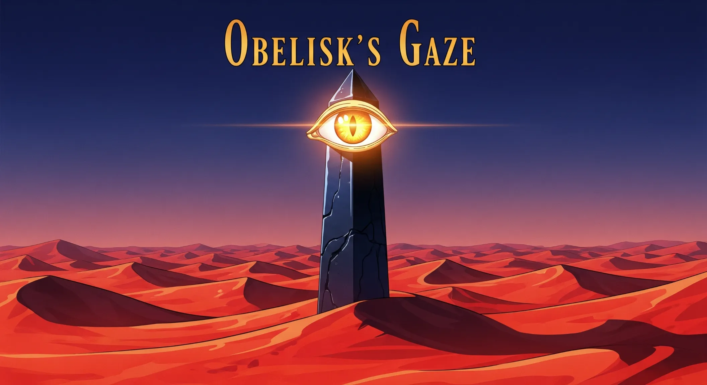
Face the obelisk and its trials in this focused challenge inspired by the classic playground game Red-Light-Green-Light.
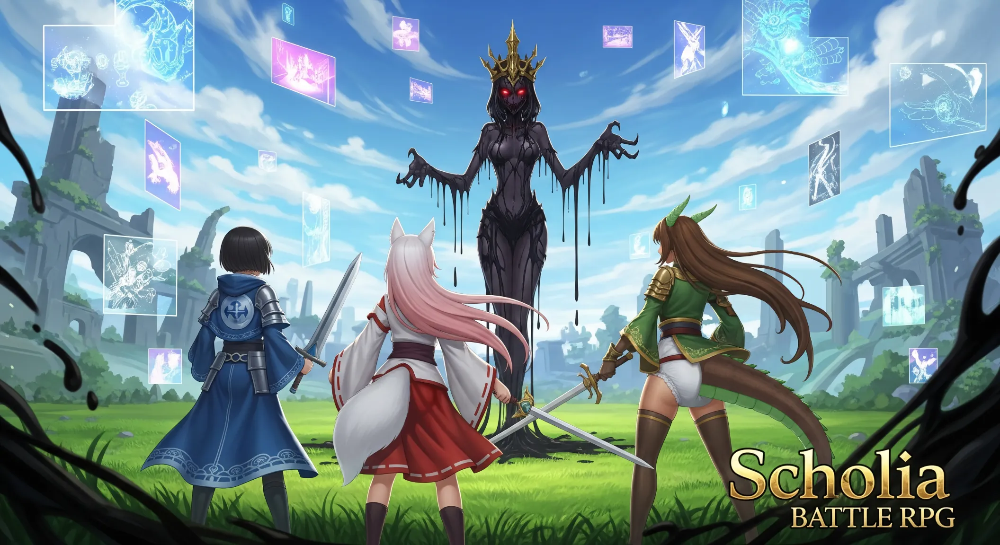
Turn-based party battles across the plains. Build your team and outwit waves of foes.
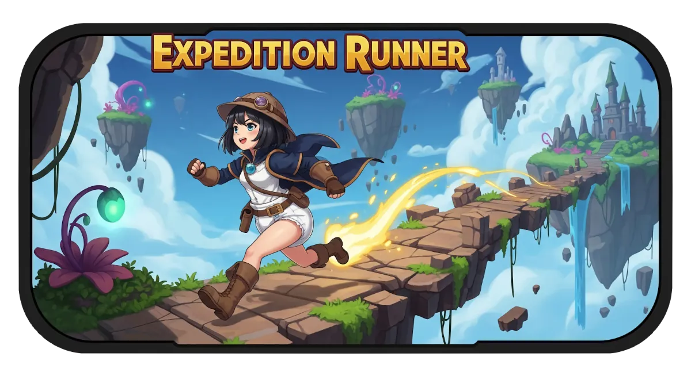
Fast-paced side-scrolling runner — jump and double-jump to dodge pits, rocks, bunnies, and birds.
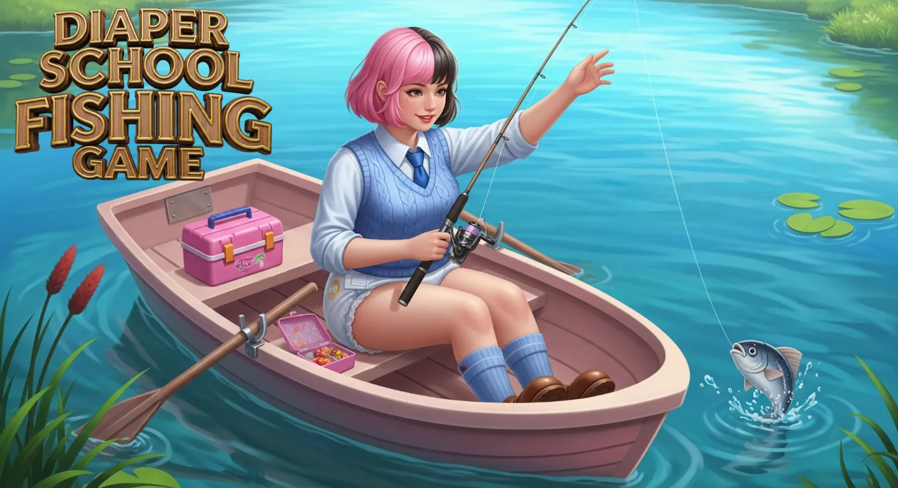
Cast your line, time the hook in the golden sweet spot, and reel in loot with a skill-based twist.
Build and export decks, and play on custom interactive gamespace included!
A multiplayer board-game race to be first place and ace graduation across 60 squares of eventful space! Add players, roll them dice, use your class abilities, and sprint to the finish!
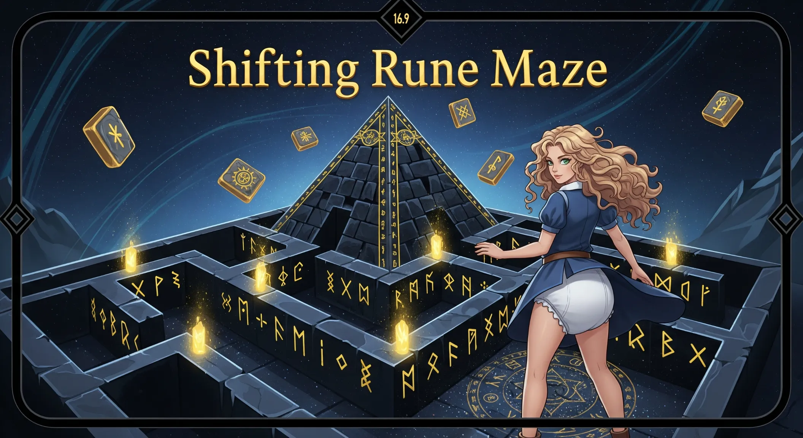
Navigate a living labyrinth that shifts under your feet. Escape monsters, collect masses of treasure, and use Rune Shatter wisely to reach the exit before the maze reshapes!
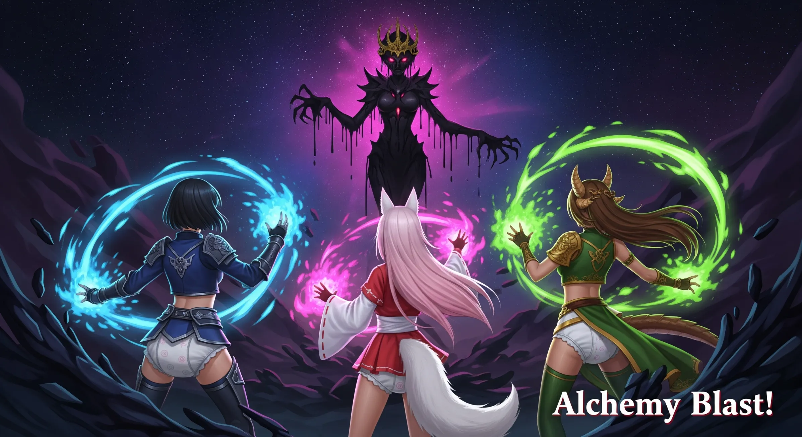
Arcade shooter action — blast foes with alchemy-powered shots and survive enemy waves.
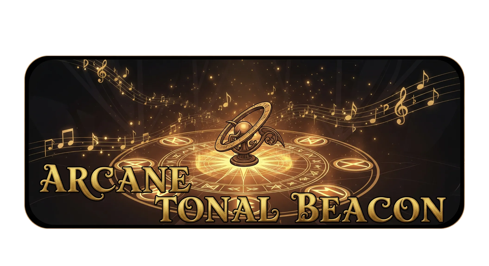
A Simon-like pattern memorization puzzle. Watch, listen, and recreate the sequence across rotating rune rings.
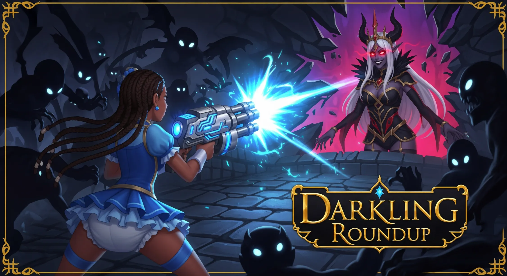
Contain darklings across rounds with evolving weapons, powerups, and bosses. Loot up and survive.
Scholia Diaspros stands upon a thousand years of woven fate, from its founding by Horace Hootz to the cataclysms of the Old War and the long, careful reconstruction that followed. What follows is the definitive timeline, compiled from the Great Library and faculty records.
This realm’s care, discipline, shadow, craft, time, and unseen guidance are personified by six godlike entities who inhabit, reside within, or are manifest across Scholia Diaspros. Their influence shapes student life, campus policy, and the Academy’s fate.
Denalyndis — The Goddess of the Nursery, Seduction, and Strength
Origin: Ancient matronly deity predating the Academy; a remnant of primal forces embodying safety and irresistible charm.
Portfolio: Caregiving, Protection, Seduction, Charm, Strength through Vulnerability.
Philosophy/Nature: “Why command fear when you can cultivate love?” A benevolent yet demanding Mother who rewards softness with resilience and grace; intolerant of cruelty or neglect.
Worshippers: Clerics of the Nursery Domain and Padded Seduction Domain; caregivers, charmers, and those who find strength in gentleness.
Ela’sharna — The Lunar Mother, Governess of Cleanliness and Order
Origin: Once a mortal student and Tabitha Caelestis’s dearest friend; sealed herself within the Black Pyramid to guard the realm from the Well’s fallout.
Portfolio: Discipline, Cleanliness, Order, Protection, Redemption through Structure.
Nature: The “Governess” counterpart to Denalyndis’s “Mother,” expressing love through rules, routine, and keeping charges safe and dry (metaphorically and literally).
Worshippers: Clerics of the Diaper Discipline Domain; hall monitors, disciplinarians, and believers in safety through structure.
Umbra (Umbirgitte) — The Veiled Mother, She Who Waits in the Dark
Origin: Born from the student Umbirgitte during the Well of Souls detonation; a proto-Darkforme deity.
Portfolio: Fear, Darkness, Monsters, Twisted Protection, Secrets.
Philosophy: Protective Terror — “A child too scared to leave their bed cannot wander into danger.” Manifests as shy student, veiled deity, and macabre post-Well morphology.
Worshippers: Warlocks of the Mother Beneath the Bed pact; Clerics of the Phobia Domain; those who wield fear to keep others from harm.
The Great Weaver — The First Matriarch, Spinner of Fate
Origin: Albino arachnoid matriarch who followed Hootz; consumed the scarp’s raw potential and devoured her first brood to secure her place.
Description: A pale, massive entity combining arachnid and humanoid grace: milk-glass skin, four arms (two delicate, two serrated), eight pink multifaceted eyes; clinical, sterile purity.
Portfolio: Creation, Textiles, Community, Containment, Lethal Combat.
Legacy: Taught magical weaving (enchanted diapers, defensive wards); mother of Diaparachnid clans; secretly gifted Tabitha bio-arcane scorpion lore that later betrayed her.
Worshippers: Warlocks of the Great Weaver pact; Diaparachnids.
Grand Father Time — The Grim Guardian, Eternal Caretaker
Origin: Ancient melancholic entity, perhaps a primordial of time; counterbalances Greensea growth and overreaching ambition.
Portfolio: Regression, Stasis, Pacification, Time, Safety.
Philosophy/Nature: “The Price of Safety is Maturity.” Offers absolute safety at the cost of adult agency; stifling but not malicious, stopping the clock to stop the pain.
Worshippers: Warlocks of the Grim Guardian pact; peacemakers who end conflict by removing the will to fight; seekers of unchanging safety.
The Unseen Hand — The Cabal of Alumni, Architects of Legacy
Origin: A gestalt of immortals, ageless beings, and legacy-obsessed alumni who refuse to leave the Academy; formed from founding shadows and survivors of purges and wars.
Portfolio: Influence, Manipulation, Politics, Secrets, the “Greater Good.”
Nature/Methods: Puppet masters courting favor with all gods—Light and Dark—to maintain balance. Infiltrated the Council as the “Diapered Whisperer.” Act via agents, accidents, misplaced items, and whisper campaigns.
Worshippers: Warlocks of the Unseen Hand pact; spies, politicians, and ambitious students who value influence over raw power.
~1000 Years Ago – The Arrival & The First Weaving: Horace Hootz discovers a stable “scarp of unreality” within the Ways and, through an unknown blend of divine, psionic, and cosmic arcanum, stabilizes it into the planar realm that becomes the Academy. He arrives with families and followers—the founding bloodlines.
The Uninvited Guest: The Great Weaver, matriarch of the Diaparachnids, follows with her first brood—the Arachnarcanum.
~990–900 Years Ago – The Burgeoning & First Alliances: Hootz shapes the world with its people, forging alliances with the Waddlehooves (granting them the Lissome Plains) and the Cowbuddies (who establish dairy craft and “Magic Milks”). He brokers a ceasefire between industrious Ants/Bees and the encroaching Arachnarcanum.
Uncontainable Hunger: The Arachnarcanum, woven of raw hunger beyond the Ways, prove uncontrollable. The Weaver constructs the Chitin Throne in the Greensea Depths and, in a night of silent terror, devours her own brood to save the canvas she intends to weave upon.
Sanctuary for the Soft: Hootz opens the plane to gentle refugees from infernal/demonic/umbral realms—Crinklehearts, Pampires, and more—displaying a clear predisposition toward “crinkly folk.” Bees cultivate Sunpetal Honey; the Road to Majica is established; the Weaver begins breeding Diaparachnid clans from chosen consorts and, in time, charms Hootz, birthing a humanoid strain.
~985: The Cowbuddy Crafting Guild formalizes workshops, pioneering enchanted padding and dairy-based enchantments.
~960: Bees negotiate a pact with volatile nature spirits, charting the dark woods and securing the Road to Majica.
~950 – The First “Grand Graduation”: Hootz gifts Seimei Thorn-of-Sunrise the First Key, enabling passage to the Material Plane without severing ties—founding Alumni tradition.
~945 – The Carcharodonian Strength Trial: A champion stabilizes shifting water planes, establishing springs feeding the academy aqueducts.
~920 – The “No Souvenirs” Incident: A Far Realm ooze breach leads Hootz to scold the entity back home and to the creation of the Planar Customs Office.
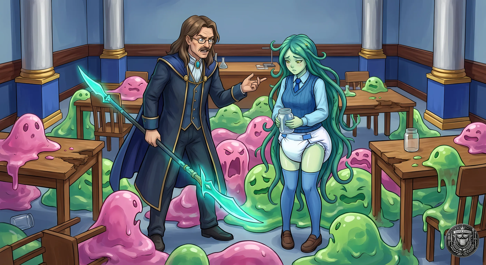
~900 – The First Class: “Practical Adventuring” begins; demand outpaces centuries.
~880 – The Ontology Crisis: The Hallway of Infinite Doors manifests as Hootz slips into ontological dysfunction; anchor-runes are raised by the newly formed Council of Professorial Oversight.
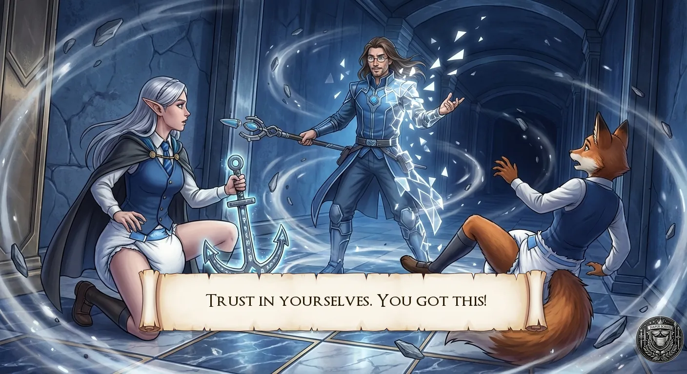
~877 – Planar Integration Event: A surge of primal arcane energy weaves Hootz into the plane itself. His essence becomes the source of whimsical, perilous fluctuations—an overdeity-like presence debated to this day.
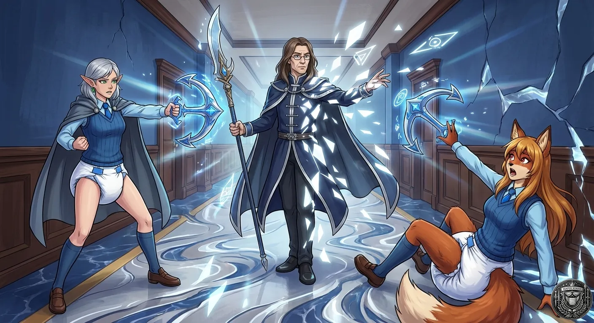
~813 – The Scholia-Born Prodigy: Ela’sharna (later Lunar Mother Ela’Sharna) is born within the demesne, displaying chimeric traits. Loremasters suspect she’s the delayed expression of the Weaver’s humanoid strain.
~800 – The Prodigy Arrives: Tabitha Caelestis enrolls at age 12, with her sisters, seeking to undo a ruined realm.
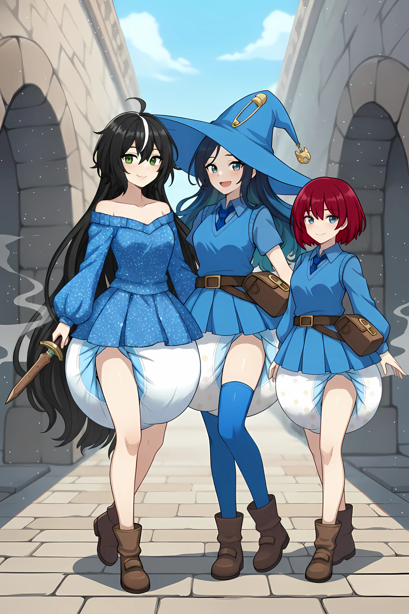
~790 – The Dark Thing & Chronal Crystal: Tabitha’s Greensea venture for a Chronal Crystal (Echo Bloom) brushes her with a nascent pre-Darkforme entity saturated in Umbra—catalyzing her darker discoveries.
~770 – The Well & The Bargain: Tabitha unveils the Well of the Blessed Engine (Well of Souls). In secret, she bargains with the Great Weaver: bio-arcane secrets for crafting Darkformes in exchange for Scorpion Peoples—who later betray both and settle the Sands of Perdu.
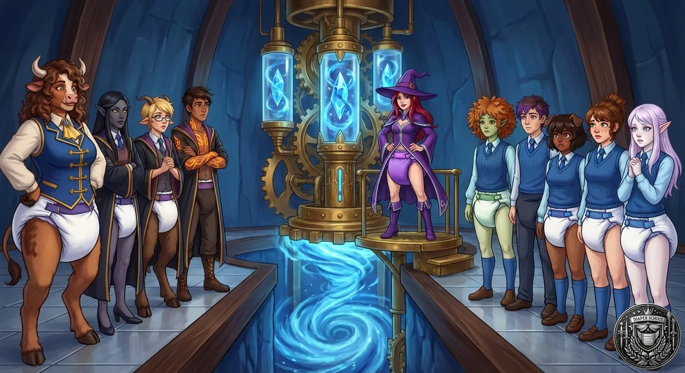
~760 – The “Blessed” Volunteers: The Cult of the Engine mimics Warforged aesthetics, masking early disappearances as “ascensions.”
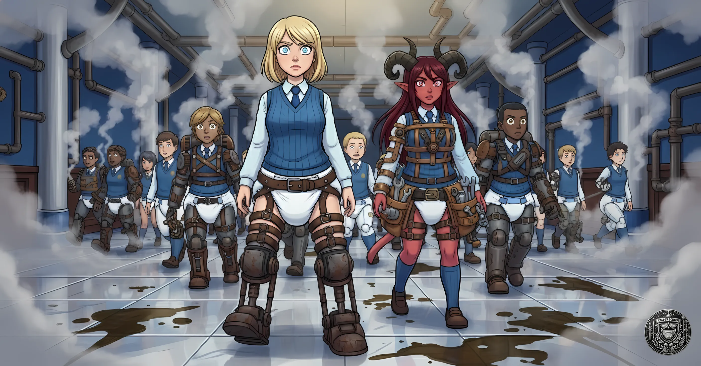
~740 – The Gear-Grind Stoppage: A tremor from the Weaver’s expanding Throne collapses supply tunnels; Tabitha institutes Mandatory Curfew as proto-Warforged secure the breach.
~725 – The First Nannybot: Tabitha unveils “Nannybot Mk I” to monitor students—early “aggressive cuddling” hints at later Bratnappers.
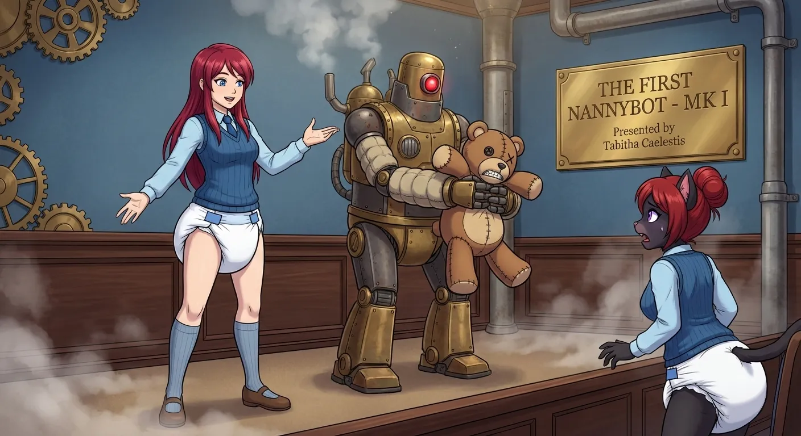
~710–708 – The Turn: Tabitha harnesses trapped souls to create the first echelons of her Warforged Host, shifting from rescue to conquest.
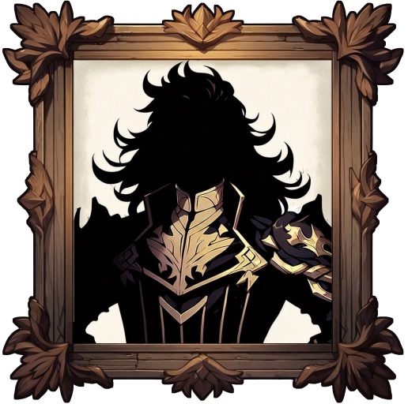
704 – The First Internal Siege: Tabitha’s Warforged Host breaches the campus, bypassing anti-lethality wards. Hundreds are slain.
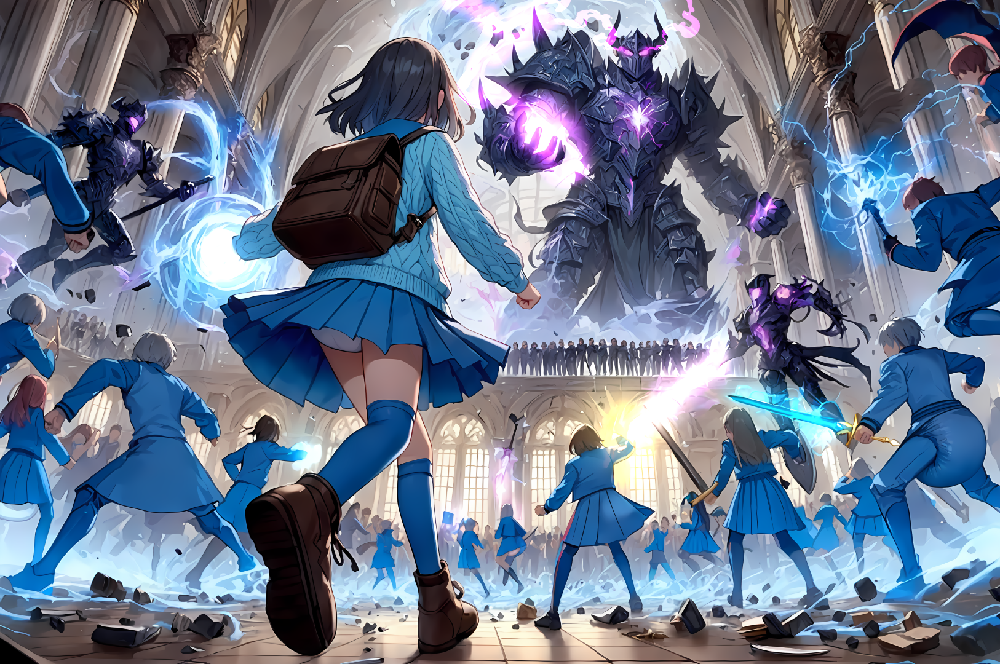
703 – The First Battle of the Gate: Monacalath the Dragon Lord and Sylane the Sister-Witch lead Tabitha’s armies against the Great Gate. The Scholian Forces, led by Galander Forsythe and Ylva, repel them at the Doors.
702 – The Day the Mountains Tumbled: Ylva’s pact with primal spirits annihilates the Mountains Mordest and the Renegade Remnant at the Training Fortress.
702 – The Iron March: Spatial distortion births the Longest of Wintertide, freezes reality conditionally into the Sands of Perdu, and destroys Scholia Psionica.
700 – The Day of Cataclysm: A Warforged breach into dormitories kills Pliya, Lian, and Seris. Umbirgitte is drawn into the Well’s machinery and becomes Umbra. Tabitha, confronted by Ylva, Qleer, Pahmin, and Avilrayn, rips empathy from her soul (creating Nurse Tabby) and falls into the detonating core. Ela’sharna seals herself within the Black Pyramid to contain the fallout.
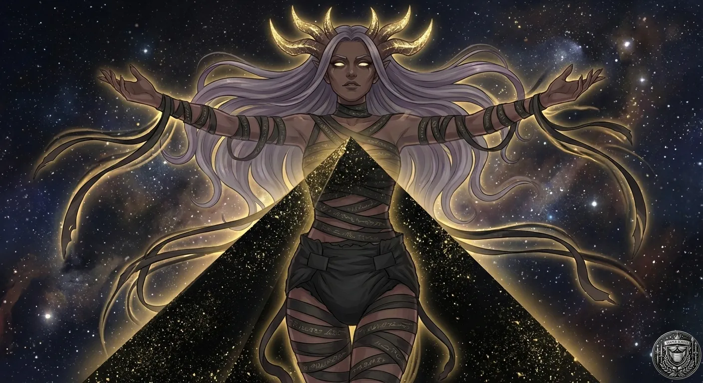
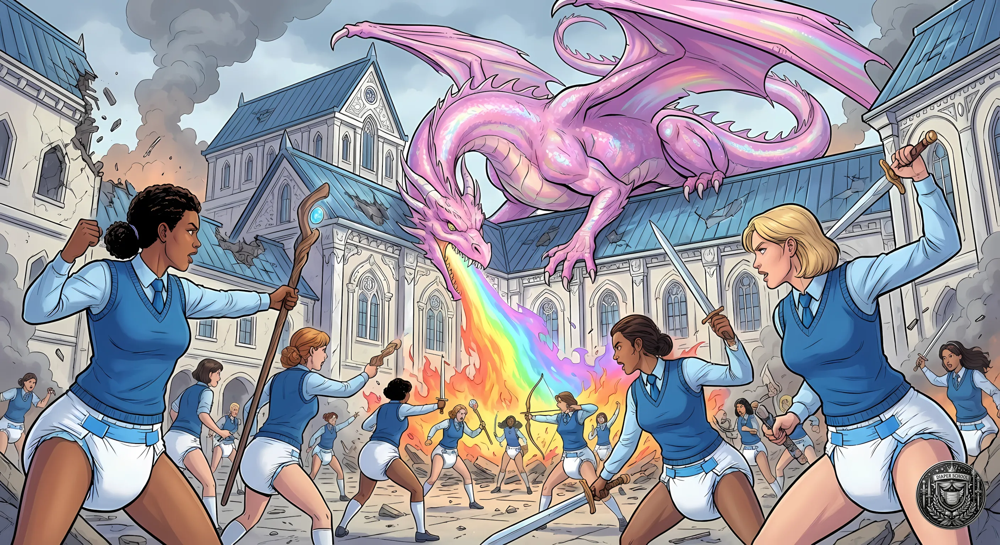
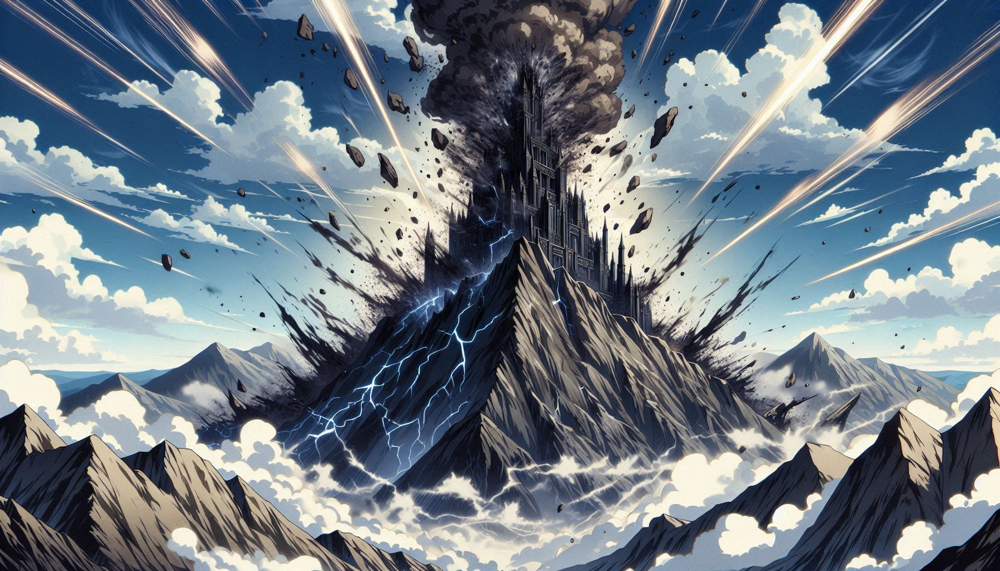
Event: The Council reasserts control. The Well is sealed. The Lissome Plains begin a slow recovery under the stewardship of the Bee communities. The Academy embraces a new epoch of extreme caution. The Expansion:
The Reorientation Ritual: Purpose: To cleanse the Well of Souls of Tabitha's corruption, restabilize the Academy's non‑lethality wards, and enable the post‑facto reclamation of souls who died under the school's protection (restoring the "no permadeath" rule). The Magic: A potent fusion of ancient Druidic magic (likely sourced from Ylva's circle) and the Great Weaver's own Soulsblood magic was required to re‑tune the Well's core frequency.
The Apotheosis of Sharna: The Sacrifice: Sharna, already a Grand Sorceress of immense power, realized the cost of purification was beyond simple spellcasting. Unwilling to use the lives of others as Tabitha had, she chose to become the fuel herself. The Process: Over a grueling period, she drained her own blood to inscribe the necessary runes. Then, utilizing necromancy derived from the Weaver's teachings, she sacrificed her own organs one by one to power the ritual's stabilizing anchors.
The Construction of the Black Pyramid: As her body withered, Sharna used her magic to construct the Black Pyramid around the Well's core. Each element of its architecture is a physical manifestation of her sacrifice: The Black Granite: The pyramid's exterior is forged from Godmortal Blood coagulated and transmuted into gold‑speckled black granite. This stone acts as her soul‑armor, shielding the realm's ontology from external chaos. The Golden Peak: The pyramid is capped with a brilliant golden topper, forged from the sacrifice of Sharna’s eyes. This explains why, in visions, her bandaged form burns with hollow golden fire where her eyes should be. The pinnacle serves as a literal and metaphorical watchtower, allowing her sightless gaze to monitor the entire plane. The Black Bones: The internal support structure is not steel or stone but the calcified, blackened remains of her own lungs. These "bones" channel the purification magic, breathing order into the plane's entropy and countering the damage caused by Tabitha's ambition. They represent her word, her breath, and her law.
The Lofting: Ascension: In her final act as a mortal (and first as a deity), Sharna lofted the massive Black Pyramid into the sky, setting it into a permanent, figure‑8 orbit around the moon and the plane itself. This celestial anchor ensures the Well can never again be accessed from the ground without immense effort (or the mountain revealing it). Temporal Permanency: The pyramid exists in a "demi‑outside" state of time, acting as a temporal sieve that filters chaotic energies. This bizarre, dancing orbit is ontologically permanent, keeping the structure safe from standard temporal decay or manipulation.
The Lunar Mother: Birth of a Goddess: In this act of supreme self‑sacrifice, Sharna ascended to become Ela'sharna, the Lunar Mother (Goddess of Love, Cleanliness, and Diaper School). Her domain became one of protection through discipline and structure, a direct counter to the chaos of her friend Tabitha. The Faith of Order: As the chief "good god" of order and law, Ela'sharna commands the largest organized faith on the plane. This grants her immense influence within democratic civilizations, serving as the moral backbone for the Council's laws. Her power base is rivaled only by the agnostic technologists of Elzbereth and the primal spirit‑worshippers of the Greensea. Church Structure: Rather than a rigid hierarchy, Elasharists share roles communally and democratically, reflecting her desire for order through cooperation. The Council of Professorial Oversight typically includes Elasharist members, honoring Sharna's legacy as one of the Academy's greatest graduates alongside figures like Thorn‑of‑Sunrise and Qleer.
The Hymn of the Black Pyramid: Rise! Rise! Witness a new dawn's skies O Black Pyramid Framed by silver moon's reprise Deep within, anchored safe away from sin Guard their love and let it in That redemption may at last begin! In her self‑inflicted and immortal chosen grave Where was bred devotion to the future we now pave Lunar Mother, Planar Daughter, first giver of godmortal blood The Ebonward against disorder's tide and the darkness flood Rise! Rise! Witness a new dawn's skies O Black Pyramid Framed by silver moon's reprise
The Vigil of the Warforged: The Loyalists: A cadre of Sharna's most loyal followers refused to leave her side. In a final act of irony and devotion, they chose to use Tabitha's own technology against her legacy. They voluntarily transferred their souls into Warforged bodies, becoming the eternal, sleepless guardians of the Black Pyramid. The Lunar Guard: These unique Warforged still inhabit the pyramid today, maintaining the machinery of the Well and protecting their slumbering Mother with stalwart devotion. They rely on the ambient mana of the Well and the pyramid's own temporal stasis to function without new resources.
Consequences of the Sealing: Lost Souls: Souls that perished before the sealing and were not claimed by the Warforged Host were largely lost to the "Ways" or the "Sands of Perdu." The "post‑facto" reclamation only applies to those whose essence remained tethered to the plane's recovering ontology. Tidal Stabilization: While the new celestial body exerts gravitational influence, potential environmental disasters in the Greensea (specifically the Jungle, not a sea) were mitigated by Carcharodonian Tidal Magics working in concert with Sharna's lingering will.
~675 – The “Lost Class”: Echo Enrollment draws students from collapsed timelines; Morphian Changelings likely arrive on its wake.
Event: The Great Library rises from the ashes. Elzbereth solidifies its industrial base in the Dracespire Mountains, discovering adamantine veins. The Expansion:
The Library’s Rebirth: The original library was a casualty of the Old War, its knowledge scattered or burned. The reconstruction was spearheaded by the Circle of the Academy, who utilized powerful Golems and Living Doll laborers to raise the new structure.
The Architect: The lead architect was a Seimei Treebearer named Root‑Weaver Oakenheart, who integrated living wood into the stone, creating the "Living Shelves" that can physically retrieve books for students.
Elzbereth’s Rise: In the Dracespire Mountains, the settlement of Elzbereth (founded by survivors and refugees) struck a massive vein of Adamantine and Starshot Ore (Item Registry). This discovery fueled their industrial revolution.
The First Forge: They built the Star‑Forge, a massive geothermal foundry that utilized the heat of the mountain's core. This allowed them to craft the first generation of heavy‑duty containment gear and reinforced plating for the Academy's growing security needs.
The Trade Route: A perilous trade route was established between Elzbereth and the Academy, patrolled by Waddlehoof caravans to protect against Darkling raids.
Event: A sentient, viral spell corrupts the ink in the Great Library, attempting to rewrite history and erase Old War heroes. The Expansion:
The Origin: The plague was a dormant "logic‑virus" left behind by Tabitha Caelestis's followers, designed to activate centuries later. It infected the magical ink supplies, turning every written word into a vector for misinformation.
The Symptoms: Books began to rewrite themselves. "The Heroism of Galander Forsythe" became "The Cowardice of Galander." Magical scrolls misfired or cast Spontaneous Accident (Spellbook) on the reader.
The Manifestation: The ink coalesced into Ink‑Blot Elementals (a variant of the Darkling Liquid Legion, Bestiary) that lurked in the aisles, ambushing students and attempting to stain them with "Rewrite Ink."
The Purge: The newly formed Circle of the Academy operated in absolute secrecy. They couldn't simply destroy the books.
The Solution: They synthesized a counter‑agent using Sunpetal Honey (from the Bee students in the Woods) and Glow‑Pulp (from the Marshland Nexus). This mixture, when applied to the pages, burned away the corruption without harming the parchment.
The Cover‑Up: The Circle claimed the library was closed for "fumigation of bookworms" to prevent panic about the fragility of history.
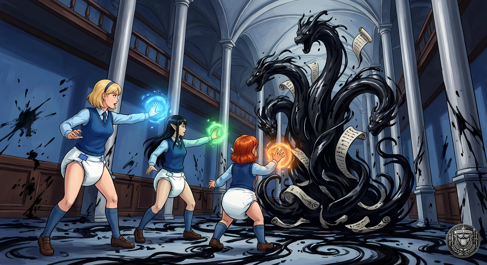
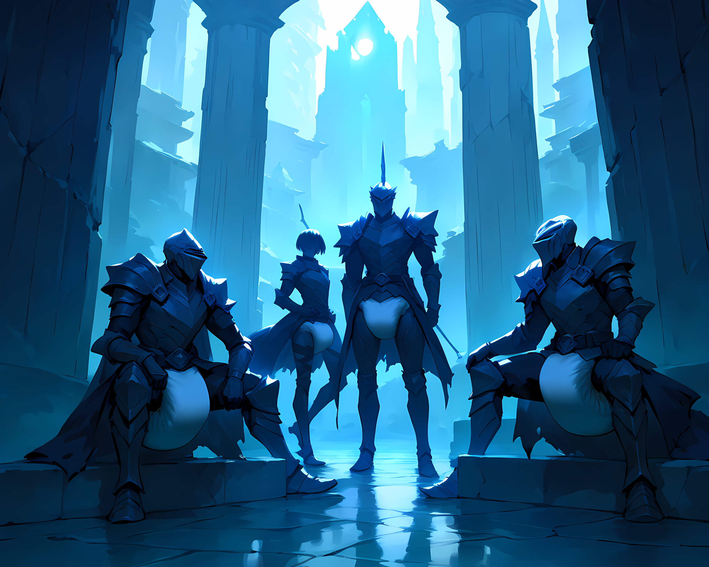
Event: The Shadow Guild is discovered operating within the Academy. They are purged, but the conflict weakens the wards. The Expansion:
The Shadow Guild: A clandestine organization of students and corrupt faculty who worshipped Umbra (in her aspect as the Queen of Secrets) and sought to weaponize the Academy's artifacts. They used StealthOps Covert Black diapers (Item Registry) to move unseen during curfew.
The Infiltration: They had established a base in the Cellarways, using the abandoned tunnels to smuggle Darkessence (Item Registry) and Petrodistillate.
The Purge: The Council, alerted by a Gemini Celestian student who witnessed a secret ritual, launched a surprise raid. The battle raged in the sub‑basements.
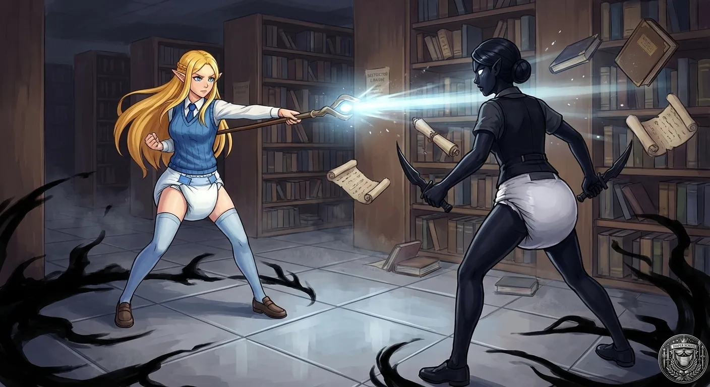
The Breach: The magical backlash of the conflict cracked the Umbral Wards sealing the deeper containment units.
The Leak: This breach allowed the first "true" Darklings (like the Darkling‑Lurker and Darkling‑Shade‑Sneak, Bestiary) to escape Umbra's containment and infest the lower levels.
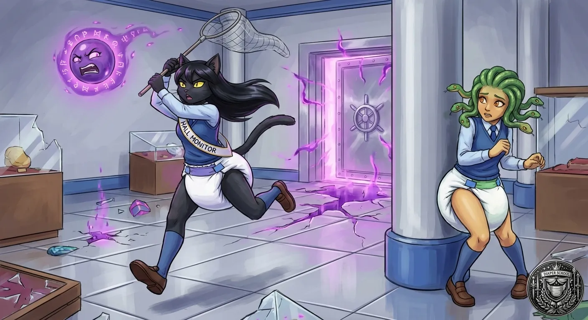
The Legacy: The "Shadow Guild" was officially disbanded, but rumors persist that the Unseen Hand absorbed its most useful members, turning them into deep‑cover agents.
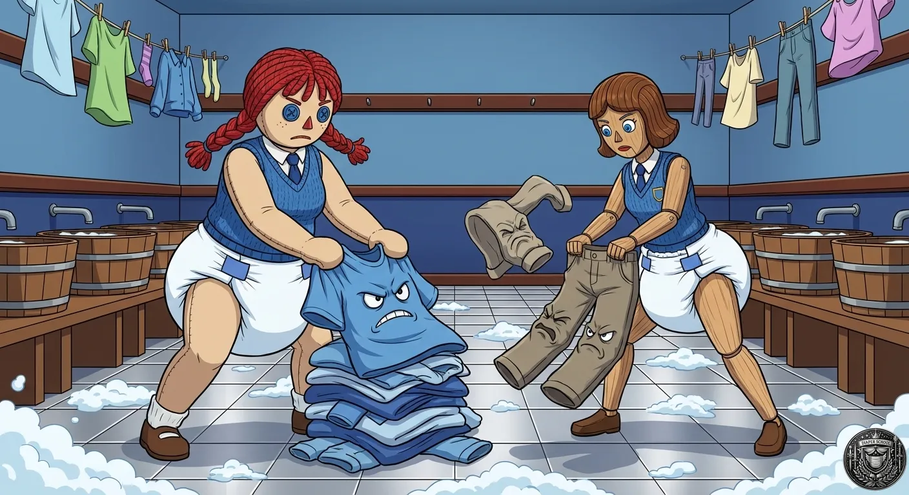
Event: The Department of Artifact Containment is founded. The Expansion:
The Shift: Realizing that destroying Old War relics often released dangerous energies (like the Ink‑Well Plague), the Council pivoted to containment and study.
The New Department: The Department of Artifact Containment (DAC) was established in a reinforced wing of the castle.
The Artificers: This shift attracted a new breed of student: the Artificer. They were fascinated by the Warforged Remnants and the mechanics of the Well of Souls.
Wild Magic Gunsmithing: To safely interact with volatile artifacts, these early Artificers developed the "Wild Magic Gunsmith" style. They built Magitech Rifles (like those used by Trainee Auditors, Bestiary) that could fire dispelling rounds or containment nets from a safe distance.
Regression Mines: One of their first major successes was the neutralization and study of Regression Mines left over from Yara's era. Instead of detonating them, they learned to reverse‑engineer the Regression Aura (Bestiary: Dark Dimension Regressor Field) to create therapeutic age‑regression tools for the Nursery Domain clerics.
Event: A surge in ambient magic energizes the plane. Elzbereth begins "magitech" experiments. The Expansion:
The Surge: A planar alignment with the Feywild and the Elemental Plane of Energy caused a massive influx of ambient mana. Spells became more potent, and magical plants in the Greensea bloomed explosively.
Side Effects: The surge also energized the Living Dolls, causing a spike in Lost Plushie awakenings and making them more active and mischievous.
Elzbereth's Innovation: The engineers of Elzbereth harnessed this excess energy. They began integrating arcane crystals (Vitalium and Robusca, Item Registry) with steam engines and clockwork.
Magitech Integration: This led to the creation of the first Arcane Trains (the "CritterCaboose" line of transport) and automated mining constructs.
The Foundry: The Star‑Forge was upgraded into the Great Foundry, capable of mass‑producing magical alloys like Chromatic Platinum (Item Registry).
The Divide: This era marked the beginning of the philosophical split between the "Pure Mages" of the Academy (who relied on personal power) and the "Technomancers" of Elzbereth (who relied on machines), setting the stage for future rivalries.
Event: The Replacement of Professor Vane. During a memorial for Professor Vane, who reportedly died on a mission, the "deceased" walks in—only to be confronted by the actual Professor Vane who had been teaching for five years.
The Revelation: The "teaching" Vane was a Morphian Changeling who assumed the identity of the dying professor to honor his wish to "finish the semester." The Changeling had performed noble deeds and improved the curriculum.
The Aftermath: The Council grants the Changeling an honorary degree and develops Bio‑Metric Wards to verify identity without harm. This event integrates Morphians into the Academy, dispelling alarmism about shapeshifter infiltration.
Event: The Planar Exchange Program establishes partnerships with other institutions, fostering diplomatic ties and cultural exchange.
Event: The Treaty of the Tides is signed with Marid ambassadors after a leak from the Elemental Plane of Water. The Submerged Campus is created to host the Aquatic Exchange, eventually becoming the domain of the Carcharodonians.
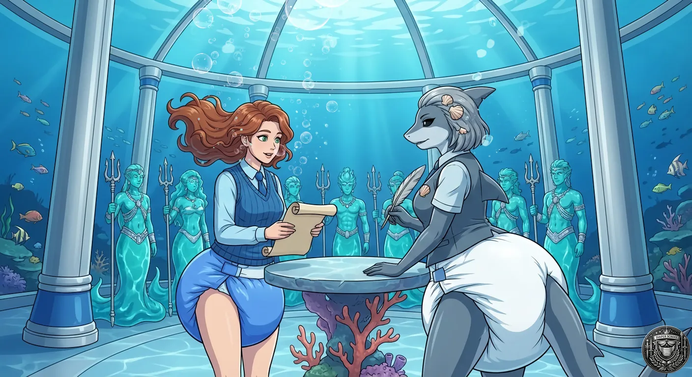
Event: The Academy refines interdimensional travel and stabilizes its own planar boundaries, training "Planar Navigators."
Artifacts & Discoveries: The Headmaster’s Tome is unearthed in the ruins of the Training Fortress; research expands under the new safeguards.
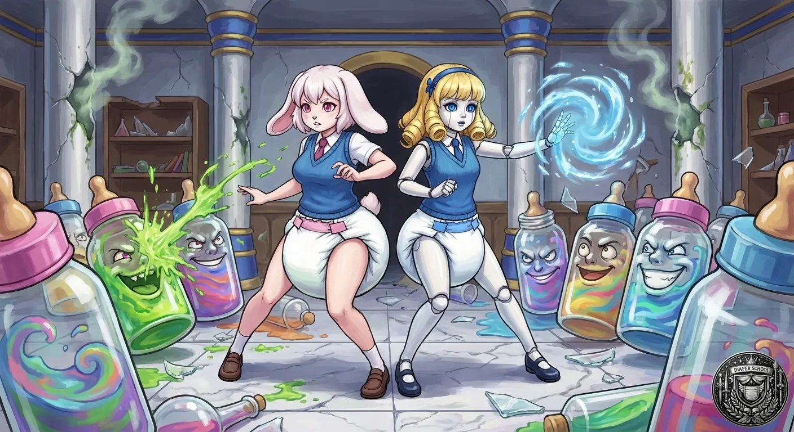
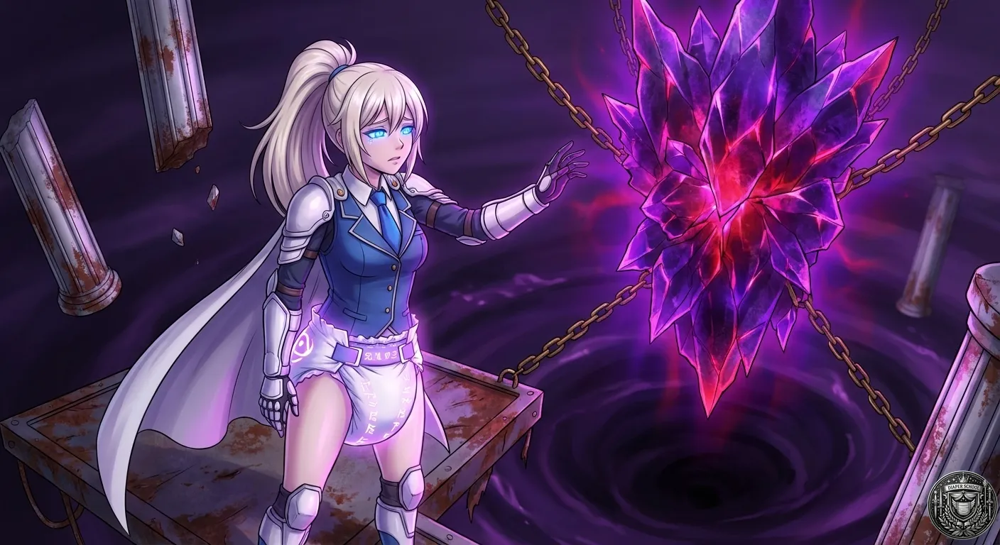
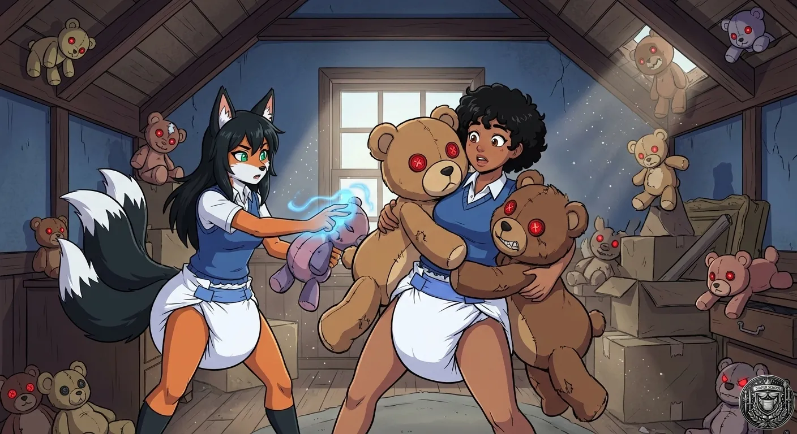
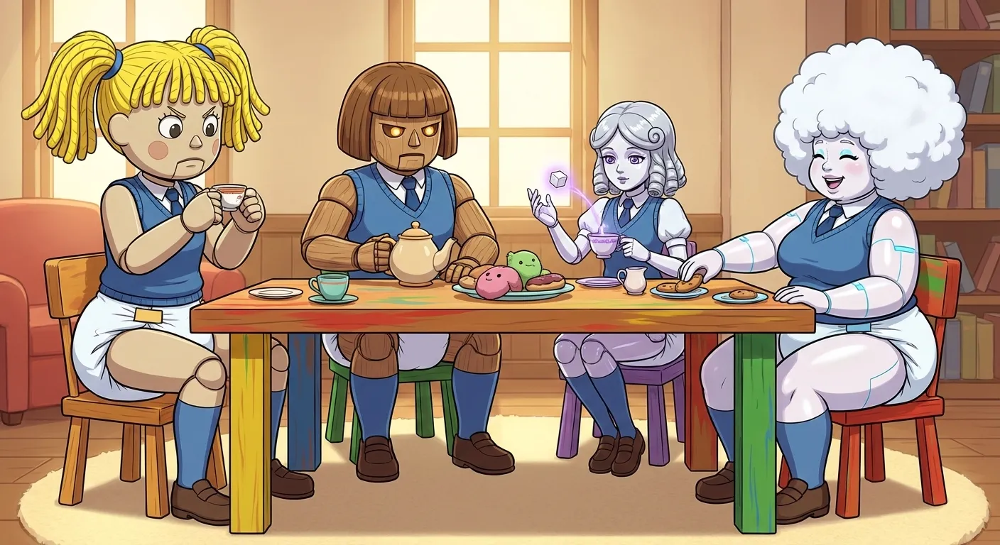

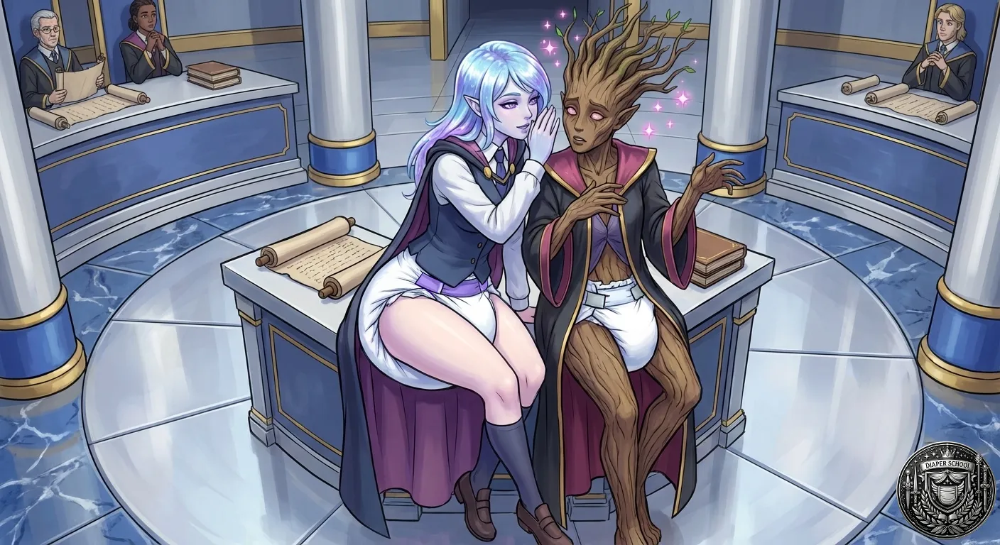
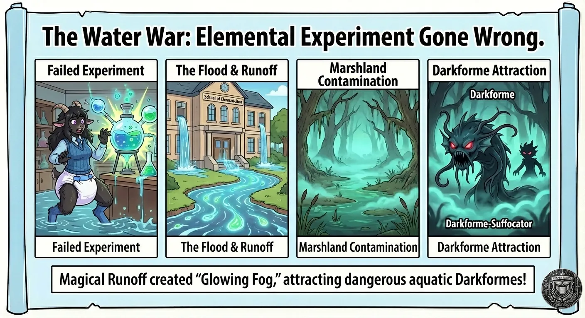
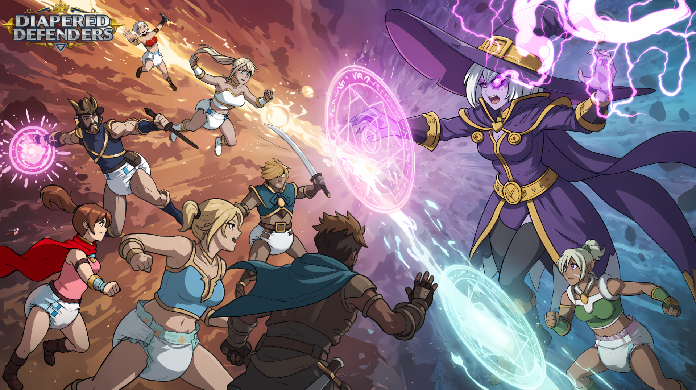

Culture & Governance: Comfort cultures, mandates, and reforms during this era reshape norms and policy across campus life.
~120 – Terror’s Night: Post-Infantilizer trauma ruptures Cellarways; Darklings flood sub-basements as surviving Defenders push back.
~115 – The Great Crib Escape: Residual regression magic animates vault-stored furniture; Sentient Cribs and Temporal Crib Guardians attempt to “put to bed” the faculty.
~110 – The Whisperer’s Legacy: The Diaper Discipline clerical domain is redeemed into structured care under the first High Priestess of Ela’sharna.
~105 – The Undercroft Incident: Ardelie Heller and Naclyra Kanzsick defeat the Sire Reaver and prevent activation of the Chap’Hell. Ardelie becomes ageless and serves into the present day.
~95 – The Iron Soul Revelation: A dense ghost solidifies into a Warforged soldier; the Ghostly Host are revealed as phase-shifted Warforged trapped in ontological dysfunction.
~85 – The Poltergeist Prank War: Bardic attempts to “reprogram” the Host animate the laundry wing; Guardian Dolls are created to subdue clothes.
~75 – Psionic Resurgence: Psionics reenter the curriculum after centuries dormant.
~70 – Comfort Clubs: Little Leaguers and Night-Light Watch form, legitimizing mutual care and age-play as stress relief.
~60 – Phase-Shift Containment: Reality Anchors keep the Ghostly Host intangible within school bounds.
~55 – Lost & Found Expansion: The West Wing Attic is annexed to house Living and Lost Plushies.
~40 – Technomantic Strike: Student protests lead to a truce; the Foundry system integrates tech and magic in the economy.
~25 – Arcanet Beta Crash: The “magical internet” launch causes Mass Suggestion feedback; “Babybrain” is accidentally uploaded and affects users randomly.
~15 – Echo Bloom: The Echo Bloom begins in the campus woods—flora display otherworldly colors and emit past sounds.
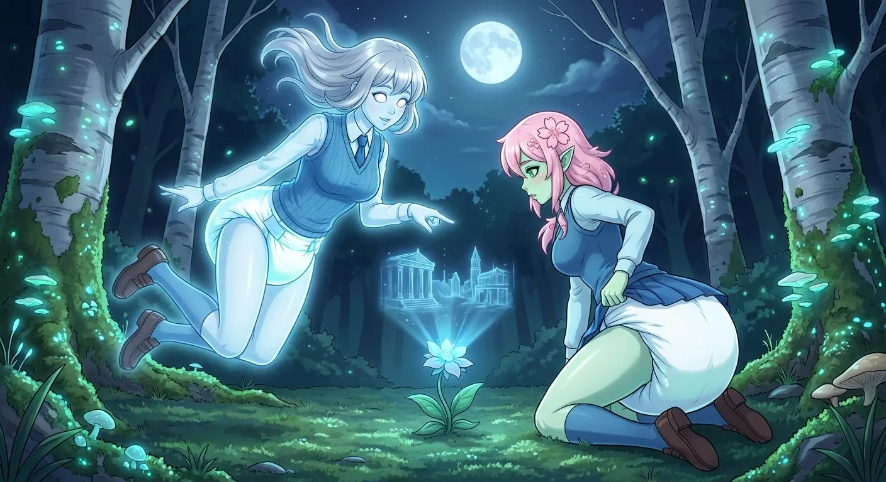
Event: Umbra’s presence resurges in shadowed domains beneath the campus. A new wave of Darkforme manifestations follows, distinct from the botanical Echo Bloom.
Present Day – Ascent to the Black Pyramid: Students Alunra, Charla, Karoline, and Elva ascend Dracespire Mountains, discover the Ancient Summer House, and meet Ela’sharna in the Black Pyramid.
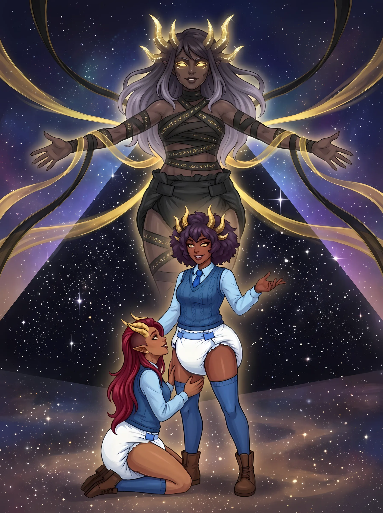
Present Day – The Slime Sovereign: Princess Goop is encountered; paths open toward the Vault of the Below or the Gelatinous Court’s liberation.
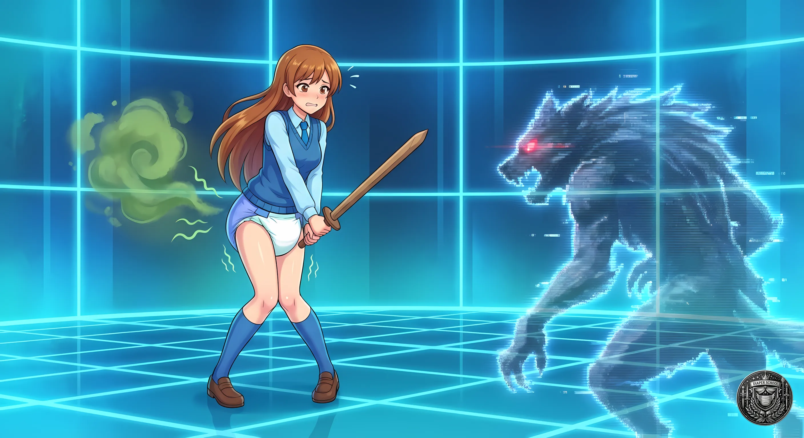
Continuing Threads: Grand quests, resilience curricula, and the Headmaster’s lingering weave shape current student life alongside stabilized anchors and renewed psionics.